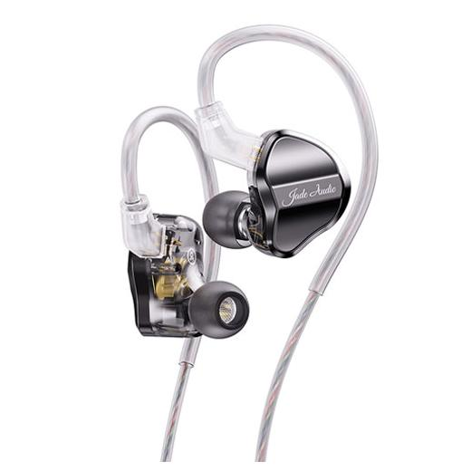

Коротко обо мне и том как я попал в УдГУ.

На картинке представлен логтип института ИМИТиФ
Музыку добавил, чтобы читать было веселее, а то у людей там клиповое сознание сложно внимание концентрировать.
Чуть-чуть о себе.
Зовут Михаил, лет мне 18. Люблю лениться, но не могу этого делать долго, если дел нет, так не те ощущения. Честно говоря, люблю, когда я занят каким-либо делом,
хоть работа в цеху, но больше недели с боку на бок не могу ворочаться. В своё время получил корочку о профессии "Оператор летательных дронов" в ИжГТУ.
Что я здесь делаю?
Когда только вышел приказ о зачислении, я подумал: - Вау, я наконец поступил. Позже я подумал, свезло ведь поступить в гум. вуз на прикладную информатику...
Меня обуяла сильная апатия и через некоторое время я познакомился со своим куратором Олегом, который мне при личном общении рассказал об обучении в вузе,
а самое главное о преподавателях. Так слово за словом, и он показал мне пример кода по универсальному калькулятору и работе с 3D пространством.
Хоть я никогда не работал с языком JavaScript, для меня код был относительно понятен, и я стал его изучать, параллельно изучая идеи, заложенные в нём.
Так я понял, что не буду пропускать ни единой пары Алексея Сергеевича, так как мне захотелось понимать идеи, заложенные в этот код, особенно формулу,
которую я увидел ещё в августе. Так я загорелся к обучению, несмотря на свою лень, мне интересно изучать предметы, связанные с точными науками, а с
гуманитарными предметами... Придётся мириться.
Моя цель
Звёзд с неба по жизни я не хватал, так что я решил стать старостой, чтобы мхом на заднем ряду не зарости. По большей части, мне бы хотелось
учиться не только тому, чему дают на парах, а ещё и любой полезной информации. Люди, преподающие в вузах, это многосторонние личности с большим
багажом (относительно моего) опыта, который хотелось бы просто перенять за время обучения.
С недавних пор открыл для себя музыку по новой, таким образом влюбился по новой, а всё благодаря HI-FI наушникам.
Если в крадце, крутые наушнки с мега дитализацией.
WARNING далее идёт субъективная оценка наушников, автор никиго не хотел обидеть или принизить, а прост овысказывает личное мнение.
Моими первыми наушниками стали Fiio JD-1 простенький вариант для человека, кто плохо в этом понимает, но хочет за небольшие деньги просто понять,
а подойдёт ли всё это для него. По звуку скажу так средние гуд и низа есть, но на верхних нидо в эквалайзере убавлять.

Сразу за ними я купил Moondrop CHU 2 мне они показались ещё боле дитализироанными,но на них просидали низа(исправляется в любом эквалайзере).
Мне в общем понравились, хорошо выраженная серидина позволяет случшать ту музыку которую я люблю и восхваляю. Явно лучше JD-1.

Soundcore liberty 3 pro мои третьи наушники котоыре я могу назвать "HI-FI наушники", на этот раз это Bluethoos наушники, они как CHU 2 только
низкие частоты выражены лучше, и они имеют хорошие микрофоны и систему шумо подавления.